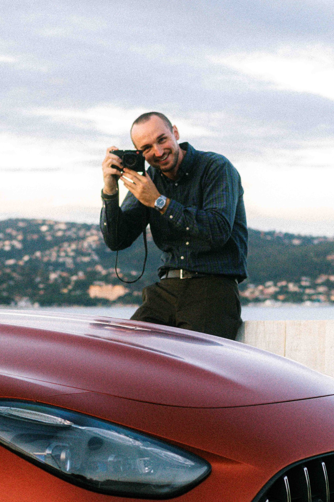

Hi, ich bin Blazej Adamowski, mein Künstlername ist Buzz Adam. Ich bin selbstständiger Foto- und Videograf aus Mannheim.
Ich habe eine große Leidenschaft für Autos, Sport, Reisen und Street Photography. Bereits seit 2017 arbeite ich als Kreativer und konnte in der Zeit viele Einblicke in Unternehmen bekommen, habe Orte gesehen, die ich sonst nie gesehen hätte und dabei viele unterschiedliche Menschen kennengelernt und ihre Geschichten gehört.
Genau das ist für mich das Besondere an meinem Job. Die Kamera bringt mich in Situationen, die ich ohne sie so nicht erlebt hätte und hat mir nicht nur geholfen, mich kreativ weiterzuentwickeln, sondern auch menschlich zu wachsen.
Was mich antreibt, ist nicht nur der Wunsch, schöne Bilder zu machen. Ich fange das ein, was Menschen und Marken wirklich ausmacht. Atmosphäre, Charakter und das Gefühl, das sie in sich tragen. Mal dokumentarisch, mal inszeniert, je nachdem, was das Projekt gerade braucht.
Ich bin nicht einfach nur derjenige, der auf den Auslöser drückt, sondern begleite Projekte ganzheitlich von der ersten Idee bis hin zum finalen Produkt. Das beginnt bei der Vorproduktion mit Planung, Organisation sowie Drehplänen, geht über die Umsetzung am Set selbst bis hin zur Postproduktion mit Schnitt und Bildbearbeitung. Im gemeinsamen Austausch gehen wir auch die Veröffentlichung an und schauen darauf, wie das Projekt funktioniert hat, was gut lief und wo Potenzial für die nächsten Schritte liegt.